PlanItDesigned and built · 13 min read
A group trip planner that catches the flight that lands too late.
PlanIt is a web app I designed and built on my own. It plans trips where people arrive, attend and leave at different times, in different time zones, and it reads the plan back to say what cannot work.
- Role
- Design and build, solo
- Timeline
- September 2026
- Why
- My own brief: group trips where one shared list stops working
- Platform
- Web. Runs entirely in the browser, with a phone layout
- Stack
- React 19, TypeScript, Vite, Leaflet, lz-string
- Status
- Live. No usage numbers to share

In short
- The problem: on a group trip, people land, attend and leave at different times. One shared list hides who is where, and it cannot tell you when a plan is impossible.
- What I built: one plan with eight views, a whiteboard that turns into a schedule only when asked, and a checker that flags journeys that do not fit.
- The key idea: automation should be predictable. Resolve only moves cards that opted in, only pushes them later, and never moves a pinned time.
- Where it stands: live, with no accounts and no server. The UX India group used it to plan their trip. I have no usage numbers beyond that.
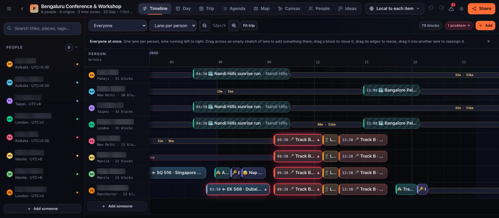
01 Why I built it
One list cannot show eight different days
On a group trip, people rarely do the same thing at the same time. One flies in a day early. Two go to a different track. Someone leaves before the farewell dinner. Most planners still treat the trip as one list that everyone follows.
I set myself the brief of planning a trip like that properly. PlanIt opens with a worked example: eight people meet in Bengaluru for a conference, from six cities and three time zones.
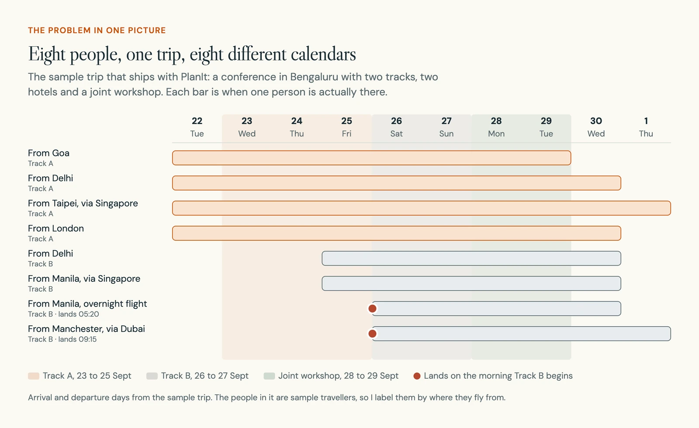
Two faults are built into the example on purpose, so the checker has something to find. The worse one looks fine on paper. A flight lands at 09:15 and the session starts at 09:30. But the airport is 33 km from the venue, in morning traffic.
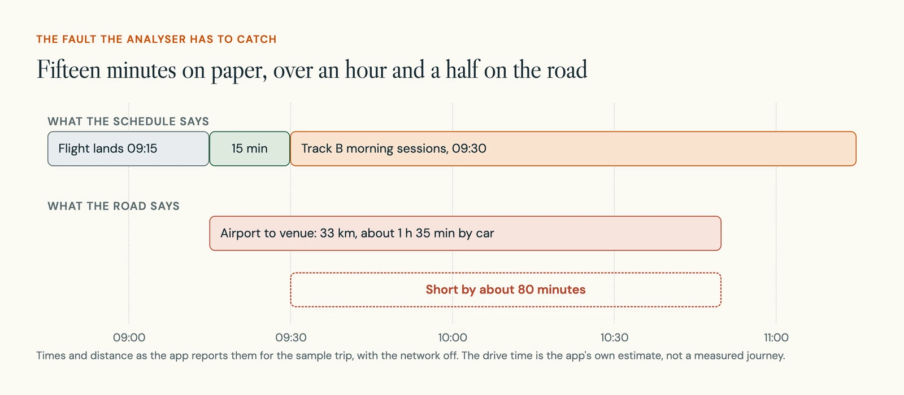
The library also holds a second trip, copied from a real group's planning board. Where the board was blank or had a question mark, the item is marked tentative instead of guessed.
02 How it works
Eight views of the same plan, in the order a planner works
A trip holds people, places and a plan. The plan is made of blocks: a flight, a session, a lunch, a transfer. Eight views show the same blocks in different shapes, and every one of them can add, move and remove blocks.
The first time a trip opens, a short tour explains the order that works. It starts with people, not with the calendar, because everything else hangs off who is coming.
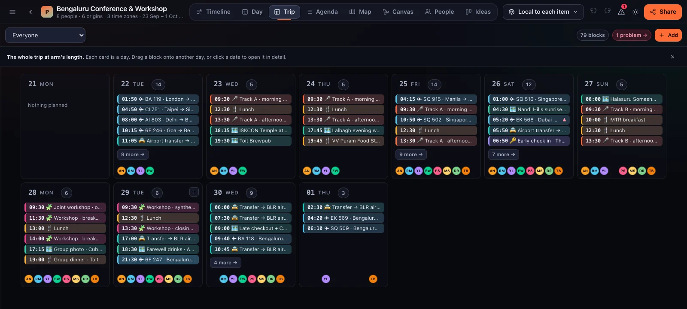
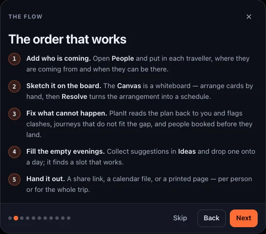
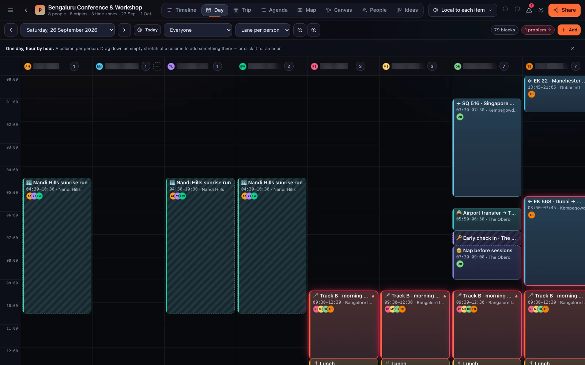
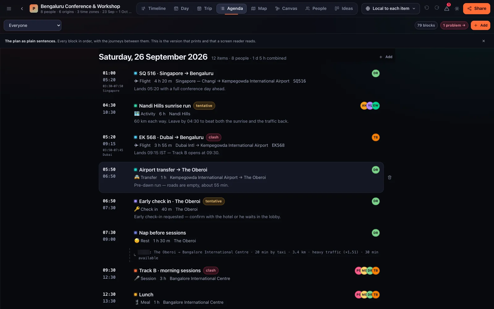
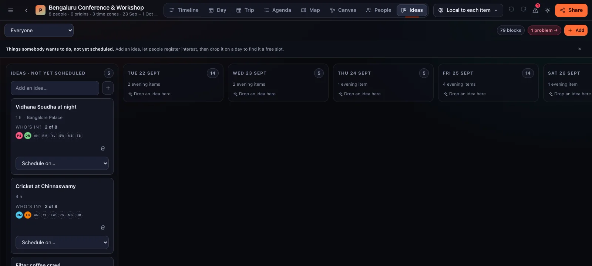
03 People first
Each person keeps their own arrival, their own window and their own clock
What you see: a lane per person on the timeline, and a card per person that holds where they fly from, when they arrive and leave, their hotel, what they like and how full their days are. A stretch before someone arrives is shaded and labelled with the day they land, so an empty lane is never a mystery.
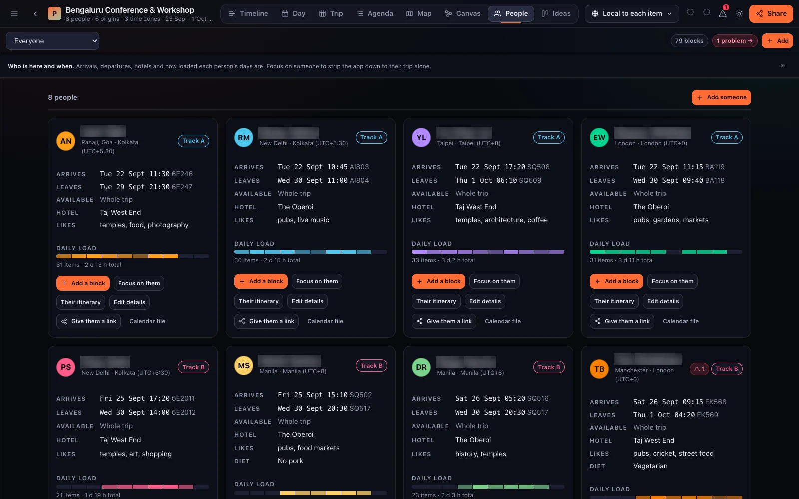
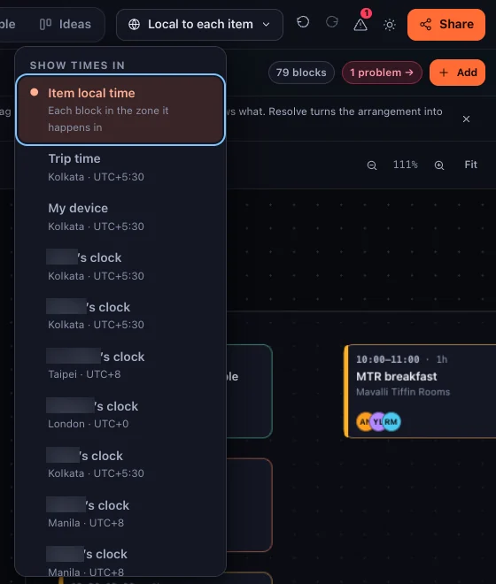
In the build: every moment is stored in UTC, the world reference time. A block also records the zone it physically happens in. The screen then shows it in whichever zone you pick. This handles daylight saving, India's half-hour offset and Nepal's quarter-hour one.
One rule took a bug to find. The board groups cards into days, and at first it read the day in whatever clock was on screen. Switching to a London traveller's clock moved every overnight flight to the wrong day. Now the board always reads days in the trip's own zone, because it is one shared board.
04 The board
The board stays a whiteboard until you press Resolve
What you see: a board you can pan and zoom, with cards you place by hand. It is deliberately not a calendar. Nothing on it touches the clock until you ask.
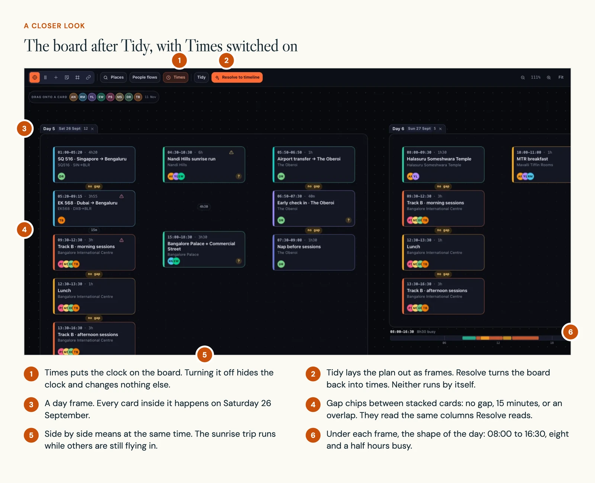
Position gets its meaning from frames and connectors. I kept this grammar small on purpose, so a card's place on the board always means one thing.
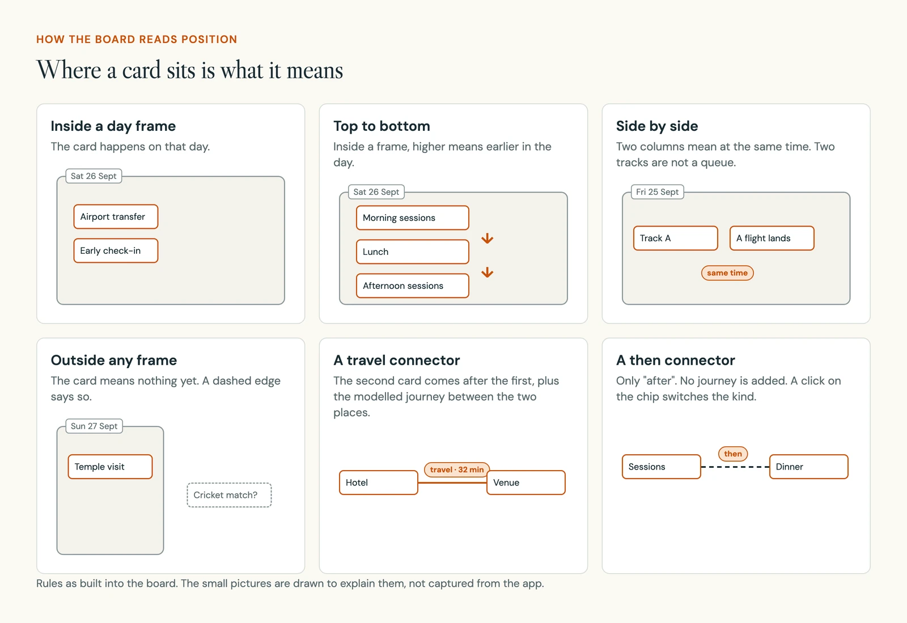
In the build: the board stores positions and the calendar stores times. Only one piece of code turns one into the other. That is what lets a card sit somewhere meaningless without breaking the plan.
Two buttons cross between them. Tidy lays the existing plan out on the board, a frame per day. Resolve reads the board back and hands out times. I ruled out a board that rearranges itself, because a board that moves under your hands is not a board. Resolve follows four rules, so its changes are predictable.
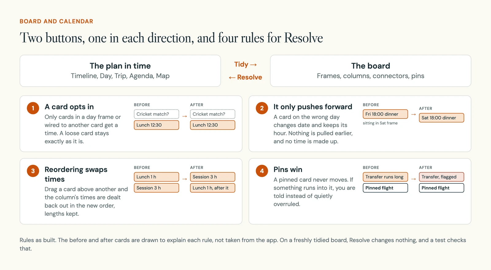
A test checks the most important property: on a freshly tidied board, Resolve changes nothing. In the app it says so in plain words: "Everything already sits where the board says it should."
One default taught me how far automation can reach. Leaving ten minutes between back-to-back cards rewrote thirty cards of a schedule that was already fine. So the default gap is zero: lunch can end as the afternoon session begins.
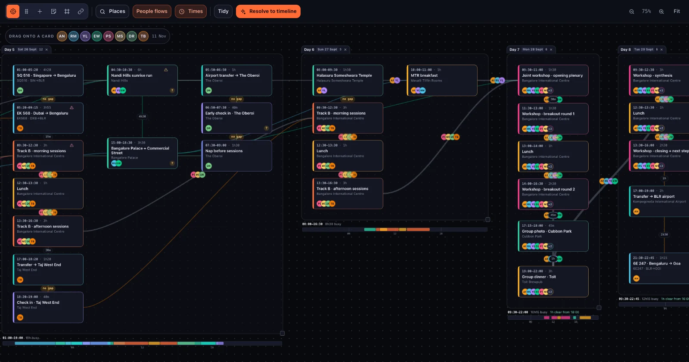
05 The checker
Warnings come in three strengths, so people keep reading them
What you see: a list of issues, sorted by how serious they are. On the sample trip there is 1 blocking issue, 2 risky ones and 41 to consider, such as free evenings that match someone's interests or long days with no meal.
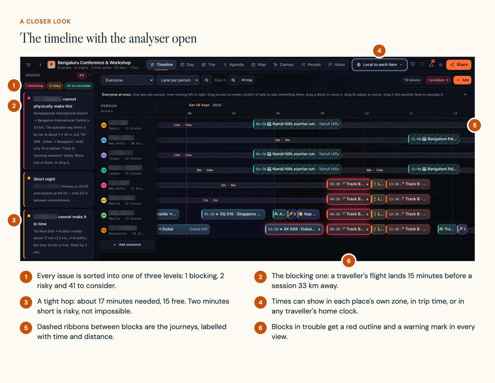
A journey can fail in three ways, and each needs a different fix. So each gets its own verdict.
| Verdict | What it means | Example from the app |
|---|---|---|
| Tight | The cab is slow. Leave earlier or allow more time. | A hotel to a restaurant, 2.5 km, two minutes short |
| Needs a flight | Nothing on the ground closes the gap. A flight would, and none is booked. | Delhi to Bengaluru with eight hours and no booking |
| Impossible | Even the quickest route does not fit. Move something. | Bengaluru to Goa, 560 km, in three hours |
I held the line between them to a real margin. Calling a two-minute shortfall impossible teaches people to ignore the warnings that are. Repeated findings are also rolled up per person per day, so the real problems stay visible.
In the build: travel time starts from a road route when the routing service answers. A traffic curve for the time of day, set per city, goes on top, so 09:15 in Delhi is not 09:15 in Goa. Airport check-in and walking time are added separately. The screen says which number came from the router and which from the model.
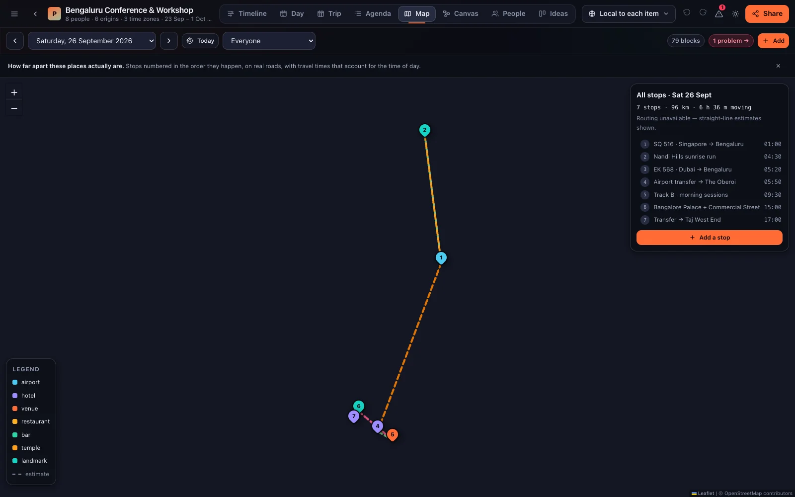
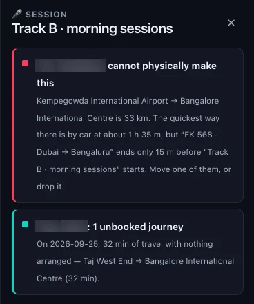
06 Sharing
A plan can be shared without a server or an account
What you see: a share dialog with a link, a calendar file and a backup. A link can be read-only or an editable copy, and it can carry one person's days instead of the whole trip.
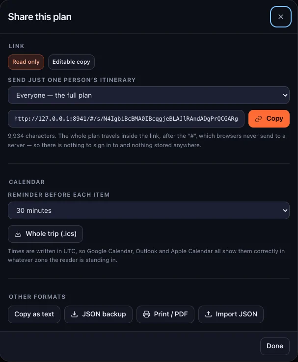
In the build: the plan is compressed into the part of the link after the "#". Browsers never send that part to a server, so a link is private to whoever holds it and needs nothing to sign in to. Calendar files write times in UTC, so Google, Outlook and Apple Calendar each show them in the reader's own zone.
Trips are saved in the browser, one entry per trip plus a small index. A hosted app that stores data in the browser must never lose it when a new version ships. So the index is treated as a cache: if it cannot be read, it is rebuilt from the trips. Older storage names are still searched, and a save that fails says so and offers a backup.
07 Accessibility
Keyboard, contrast and colour were built in, not added later
Drag and drop works from the keyboard, using the same logic as the mouse. Space picks a block up, the arrow keys move it, Enter drops it and Escape puts it back. Each step is announced with the new time. This meets two WCAG rules: everything works from a keyboard, and dragging always has a simpler alternative.
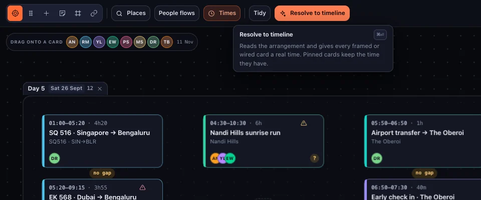
I measured contrast for every visible piece of text against the background it is actually painted on. Both themes have zero failures at the AA level. The lowest ratio is 4.99 to 1, and about two thirds of the text passes the stricter AAA level. A higher-contrast setting raises that to 91%.
Colour is never the only signal. Every block has an icon as well as a colour. A tentative block is hatched, dashed and labelled. The app also follows the system settings for reduced motion, reduced transparency, more contrast and Windows high contrast.
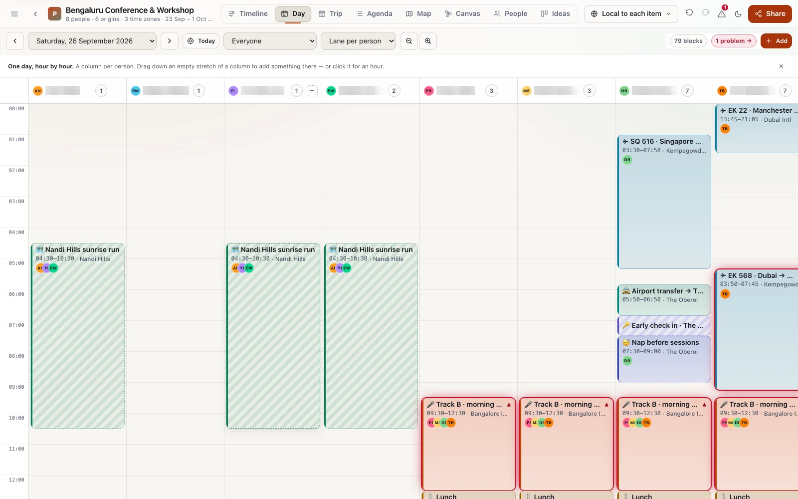
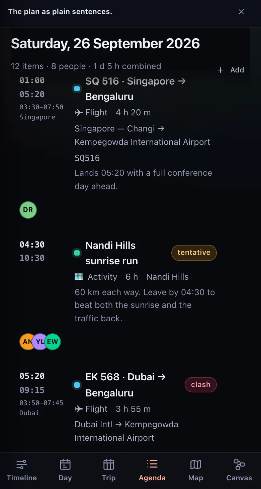
08 The build
No server: a tested core, eight views and the browser's own storage
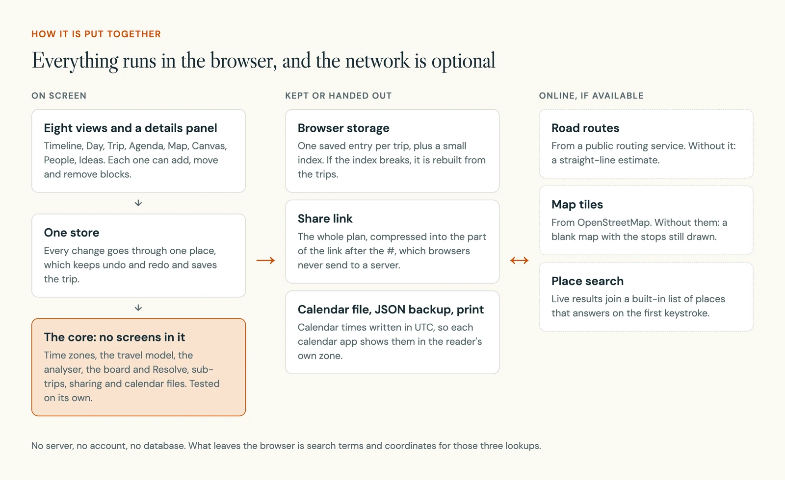
| Part | What I used |
|---|---|
| App | React 19, TypeScript, Vite |
| Map | Leaflet, with OpenStreetMap tiles |
| Share links | lz-string compression |
| Routes and places | A public routing service and OpenStreetMap search, both optional |
| Hosting | Four static files. Any static host works |
The core has no screen code in it, so it is tested on its own. The tests cover time zone maths, the traffic model, calendar output, share links, storage recovery, the board's maths and Resolve. The project has a single check that runs type checking, the tests and a production build.
- 9
- commits
- 2
- days, 10 and 11 September 2026
- 8
- views of one plan
- 0
- servers, accounts or databases
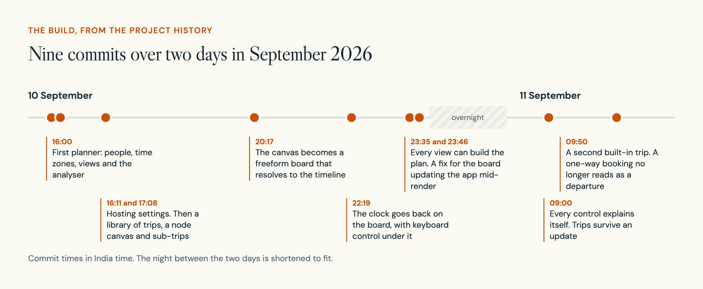
The hardest problems were small rules that broke big things.
| Problem | What went wrong, and what I changed |
|---|---|
| Overnight flights | The board read days in the clock on screen, so switching clocks moved every overnight flight by a day. Days are now always read in the trip's zone. |
| Default slack | Ten minutes between cards rewrote thirty cards of a good schedule. The default is now zero. |
| Fast drags | Drag tracking started a moment too late, so a quick gesture could be lost. It now starts the instant the pointer goes down. |
| Text in blocks | Blocks have a fixed height, and long text painted over the line below. Each block now measures first and drops the place, then the clock, then the title, down to just an icon. |
| Dialogs | A style name used by both old and new dialogs made every dialog show at once. The new panels use their own name. |
09 Where it stands
Live, with no accounts and no usage numbers
PlanIt is live and free to use. With no accounts and no server, I have no count of users or trips to report. These are also still open:
- I have no feedback from a group using it to share here.
- Travel times are estimates from a model, not live traffic.
- A trip lives in one browser. Moving it needs a link or a backup file.
10 What is next
Find out whether people can predict what Resolve will do
The test I would run next:
- Give people a trip with parallel sessions, a pinned departure and travellers in two time zones.
- Ask them to say what Resolve will change before they press it.
- Count the changes that surprised them, the conflicts they found on their own, and how well they can explain the final plan.
11 What I learned
Useful automation is modest and easy to predict
Each time automation reached too far, it cost trust. Ten minutes of invented slack rewrote thirty cards. A board that rearranged itself would have stopped being a board. Resolve became useful when I limited what it may touch: cards that opted in, only later, never a pin.
Warnings work the same way. If every shortfall is "impossible", people stop reading. Giving each kind of failure its own name and its own fix kept the one real problem easy to see among 44.
What is happening around this place?